제품응용모델링기능사 (2007-09-16 기출문제)
1과목: 제품디자인일반
1. 머리와 안구를 고저앟여 한 점을 주시했을 때 동시에 보이는 외계의 범위는?
- 안구
- 시력
- 시각
- 시야
(정답률: 알수없음)

2. 다음 중 색입체에 관한 설명으로 틀린 것은?
- 색상은 원으로 배열된다.
- 명도는 직선으로, 채도는 방사선으로 배열된다.
- 명도의 무채색 축은 위로 올라갈수록 고명도가 된다.
- 채도는 무채색 축에 가까울수록 고채도가 된다.
(정답률: 90%)
3. 시각상 안정감과 명쾌한 감정을 유발시키는 구성 형식의 중요한 원리 중 하나로 대칭과 비대칭, 비례, 주도와 종속, 규칙과 불규칙 등에 관한 디자인 원리는?
- 균형
- 리듬
- 동세
- 반복
(정답률: 알수없음)
4. 동일색상 내에서 가장 선명한 색 또는 그 영역을 말하며, 오스트발트 표색계에서 가장 채도가 높은 색을 지칭하는 용어는?
- 순색
- 색환
- 난색
- 팽창색
(정답률: 알수없음)
5. 동일한 조건에서 앞으로 튀어 나올듯한 느낌을 주는 진출색에 대한 설명으로 잘못된 것은?
- 무채색이 유채색보다 진출함
- 따뜻한 색이 차가운 색보다 진출함
- 밝은 색이 어두운 색보다 진출함
- 채도가 높은 색이 채도가 낮은 색보다 진출함
(정답률: 알수없음)
6. 아래 그림은 제품의 개발 경향을 분석하기 위한 것이다. 이런 그림을 무엇이라고 하는가?
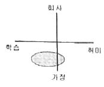
- 아이디어 스케치
- 마케팅 요인
- 이미지 앱
- 렌더링
(정답률: 알수없음)
7. 인간공학에 관한 설명 중 가장 거리가 먼 것은?
- 에르고노믹스(Ergonomics) 또는 휴면 팩토스(Human Factors) 라고도 한다.
- E. J. McCormick은 인간의 작업과 작업 환경을 정신적, 신체적 성능에 적합하게 하는 과학이라고 했다.
- 일의 자연적 법칙을 강조하는 미학의 특성을 가지고 있다.
- 2차 대전 이후부터 인간과 기계와의 적합성을 본격적으로 연구하게 된 학문이다.
(정답률: 알수없음)
8. 영국의 미술공예운동에 영향을 받아 무테지우스를 중심으로 결성되고, 공업 생산품의 양질화와 규격화를 모색하면서 이성적이고 단순한 디자인을 추구하여 근대 디자인 발전에 기여한 독일의 단체는?
- 바우하우스
- 독일공작연맹
- 울름조형대학
- 드 스틸
(정답률: 알수없음)
9. [모든 예술적 창작을 통하여 통합하여 모든 공작기술과 공학적 훈련의 새로운 건축으로 재통일한다.]를 목표로 했던 조형학교의 이름은?
- 드 스틸(De Stijl)
- 독일공작연맹(DWB)
- 바우하우스(BAUHAUS)
- 유겐트스틸(JUGENDSTIL)
(정답률: 알수없음)
10. 점에 대한 설명으로 옳은 것은?
- 점이 이동한 것이다.
- 위치만 있고 크기가 없다.
- 선이 이동한 것이다.
- 면이 이동한 것이다.
(정답률: 알수없음)
11. 다음 중 인간의 눈으로 볼 수 있는 빛의 파장 영역은?
- 240nm ~ 360nm
- 380nm ~ 780nm
- 790nm ~ 980nm
- 980nm ~ 1000nm
(정답률: 알수없음)
12. 다음 면의 변화로 만들어진 입체의 결과에 대한 짝으로 틀린 것은?
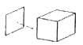
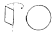
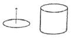
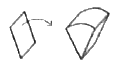
(정답률: 알수없음)
13. 흰 바탕 위보다 검은 바탕 위에 놓인 주황색이 더욱 밝게 보이는 현상은?
- 색상대비
- 명도대비
- 채도대비
- 계시대비
(정답률: 알수없음)
14. 다음 중 신제품 개발을 위한 아이디어 선정 과정에서 고려할 사항이 아닌 것은?
- 제품의 특징
- 회사 이미지와의 일관성
- 경쟁 제품과의 차이
- 회사 임직원의 성격
(정답률: 알수없음)
15. 다음 중 점, 선, 면의 이념적인 형태를 직관화한 것은?
- 현실적 형태
- 순수형태
- 인위형태
- 자연형태
(정답률: 알수없음)
2과목: 제도와 CAD
16. 면에 대한 설명으로 맞는 것은?
- 점이 움직인 거리이다.
- 형태의 가장 기본적인 생성원이다.
- 형태를 한정하는 외곽선이다.
- 길이와 너비를 가지며, 넓이는 있으나 두께는 없다.
(정답률: 알수없음)
17. 다음 스케치의 종류 중에서 가장 정밀한 것으로 주로 외관상의 상태에 대하여 정밀하게 나타내며 물체의 형상 및 재질, 패턴, 색채 등의 정확한 표현이 요구되는 스케치는?
- 스크래치 스케치
- 스타일 스케치
- 러프 스케치
- 섬네일 스케치
(정답률: 알수없음)
18. 제품디자인 프로세스와 가장 거리가 먼 것은?
- 시장조사 및 분석
- 프리젠테이션
- 모델링
- 생산
(정답률: 알수없음)
19. 소비자를 집단별로 구분하는 시장의 세분화 방법이 아닌 것은?
- 지역, 도시, 인구밀도
- 제품의 사용빈도, 상표 충성도
- 연령, 성별, 결혼 유무
- 이념, 과거의 습성
(정답률: 알수없음)
20. 다음 중 사용자 인터페이스의 설명으로 가장 옳은 것은?
- 사람과 도구, 사람과 기계와의 접점, 도구, 기계와 대상과의 접점을 의미하지만 오직 마이크로 프로세스에 의해서 제어된 제품에 사용한다.
- 인간이 지닌 꿈을 가상현실로 하여 새로운 경험을 체험하게 해 주는 것으로 꿈, 놀이라는 개념을 지니고 있다.
- 기업과 사용자간의 커뮤니케이션 매개체로서 사용자가 방법을 배우고 익히기 쉽도록 적합한 지각적, 언어적 정보를 제공하여 사용상의 실수 및 오동작을 최소화시키는 역할을 한다.
- 사용자의 인구통계학적 특성 및 사용욕구에 대한 정보를 수집하는 일을 한다.
(정답률: 알수없음)
21. 다음 그림과 같이 각각 점 A와 B를 중심으로 AB 길이의 1/2보다 큰 임의의 반지름으로 원호를 그려 만나는 교점을 연결하여 등분하는 도법은?
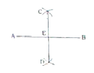
- 직선의 수직 2등분
- 직선의 수직 3등분
- 각의 수직 2등분
- 각의 수직 4등분
(정답률: 알수없음)
22. 정이십면체는 각 면이 어떤 도형으로 이루어 지는가?
- 정삼각형
- 정사각형
- 정오각형
- 정육각형
(정답률: 알수없음)
23. 다음 중 아래의 그림과 같이 물체의 앞면 모서리는 수평선과 평행하게, 옆면 모서리는 수평선과 임의의 각도 α로 하여 그리는 투상법은?
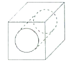
- 정투상
- 사투상
- 표고투상
- 구면투상
(정답률: 55%)
24. 다음 물체를 화살표 방향에서 볼 때 제3각법에 의한 정면도는?
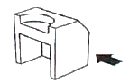
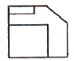
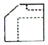
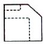
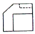
(정답률: 100%)
25. 대상물의 면 일부분에 특수한 가공을 하는 경우, 이것을 표시하는데 사용되는 선은?
- 가는 실선
- 굵은 1점 쇄선
- 가는 1점 쇄선
- 가는 파선
(정답률: 알수없음)
26. 제3각법에 대한 설명 중 틀린 것은?
- 정면도의 표현이 합리적이다.
- 치수 기입이 합리적이다.
- 보조 투상이 용이하다.
- 기준이 눈 → 물체 → 화면의 순서이다.
(정답률: 알수없음)
27. 수주자가 주문자의 검토를 거쳐 승인을 받아 계획 및 제작을 하는데에 기초가 되는 도면은?
- 계획도
- 제작도
- 주문도
- 승인도
(정답률: 알수없음)
28. 컴퓨터 그래픽에 대한 설명으로 틀린 것은?
- 대상이 되는 물체 등의 형상, 색체, 그림자 등의 각종 성분을 컴퓨터에 의해 이미지 변환 작업이 가능하다.
- 정지된 화면 즉, 정화상과, 움직이는 그림 즉, 동화상으로 크게 나눌 수가 있다.
- 초창기에는 예술을 위한 것이 아니라 컴퓨터와 인간과의 커뮤니케이션을 위한 개념으로 시작되었다.
- 움직이는 화면만을 나타내며, 오늘날의 컴퓨터 시초는 1970년대 초로 보고 있다.
(정답률: 알수없음)
29. CAD의 명령 중에서 @5＜45 같은 형식의 좌표방식은?
- 절대 좌표계
- 상대 좌표계
- 절대 극좌표계
- 상대 극좌표계
(정답률: 알수없음)
30. 다음 중 수학적인 알고리즘을 통해 선이나 곡선, 원호 등에 대한 정보를 가지고 있는 그래픽 방식으로 화면을 확대하거나 축소하여도 화면에서 일정한 해상도를 유지하도록 만들어진 그래픽 방식의 파일은?
- BMP
- JPG
- AI
- PSD
(정답률: 알수없음)
3과목: 모델링재료
31. 도자기에 물과 같은 액체를 담았을 때 표면으로 흡수되지 않게 하는 역할을 하는 것은?
- 매용 원료
- 비가소성 원료
- 가소성 원료
- 유약
(정답률: 알수없음)
32. 동물성 접착제로 아교의 특성이 아닌 것은?
- 짐승의 가죽이나 뼈 등으로 만든다.
- 악취가 많이 난다.
- 접착력이 좋고 빨리 굳으나 내수성이 없다.
- 주로 나무나 가구의 맞춤, 나무와 종이의 접착제로 사용한다.
(정답률: 알수없음)
33. 엔지니어링 플라스틱이라고도 하며, 아크릴로 니트릴, 부타디엔, 스티렌 3성분으로 구성된 플라스틱은?
- 페놀 수지
- 폴리카보네이트
- 에폭시 수지
- A.B.S 수지
(정답률: 알수없음)
34. 다음 중 열경화성 수지가 아닌 것은?
- 페놀수지
- 요소수지
- 아크릴수지
- 멜라민 수지
(정답률: 알수없음)
35. 재료의 구비조건으로 가장 거리가 먼 것은?
- 균일성
- 가공성
- 경제성
- 유행성
(정답률: 80%)
36. 목재를 건조하는 이유로 적합하지 않은 것은?
- 내구성 향상
- 부패 방지
- 변형 및 틀어짐 방지
- 목재 고유의 향 유지
(정답률: 알수없음)
37. 다음 중 안료의 기능이 아닌 것은?
- 건조 속도를 조정한다.
- 도료에 여러 가지 색상을 나타낸다.
- 내구력을 증가 시킨다.
- 광택의 조절 및 도막 강도를 증가 시킨다.
(정답률: 알수없음)
38. 불포화 폴리에스테르에 유리 섬유층을 넣어 강화시킨 재료로서 요트, 스포츠카 등의 성형품을 만드는 데 사용되는 재료는?
- 나이론
- 실리콘
- 에폭시
- FRP
(정답률: 알수없음)
39. 다음 중 비중이 가장 큰 목재는?
- 느티나무
- 오동나무
- 가문비나무
- 은행나무
(정답률: 알수없음)
40. 양면에 칠하여 10~60분 정도 손으로 압착하면 충분한 접착력을 발휘하는 것으로 아크릴 재료에 잘 접착되는 것은?
- 폴리아미드
- 클로로포름
- 폴리비닐
- 폴리에스테르
(정답률: 알수없음)
41. 다음 중 목면의 염색에 많이 사용되는 염료가 아닌 것은?
- 산성염료
- 직접염료
- 황화염료
- 배트염료
(정답률: 알수없음)
42. 외력의 작용 방향에 따른 강도의 종류가 아닌 것은?
- 인장강도
- 압축강도
- 수축강도
- 전단강도
(정답률: 알수없음)
43. 칠솔이나 롤러에 의한 페인트 도장 시의 요령으로 부적합한 것은?
- 맑은 날 한다.
- 중복 도장 시 완전히 마른 다음 칠한다.
- 밀폐된 공간에서 작업한다.
- 페인트 도료를 잘 섞거나 저어 사용한다.
(정답률: 알수없음)
44. 연질로 곡면작업이 쉽고 디자인 변경이나 수정이 용이하여 자동차 모델링에 많이 사용되는 재료는?
- 목재
- 석고
- 점토
- 플라스틱
(정답률: 알수없음)
45. 수지모형의 성형법으로 적합하지 않은 것은?
- 주형법
- 압출 성형
- 수취법
- 열성형
(정답률: 80%)
4과목: 제품응용모델링
46. 3차원 모델링에서 물체의 외곽선만으로 대상물의 형체를 나타내는 방법은?
- 히든 라인
- 렌더링
- 와이어 프레임
- 매핑
(정답률: 알수없음)
47. 솔리드 모델링에서 'Union'의 의미는?
- 합집합
- 차집합
- 교집합
- 집합
(정답률: 알수없음)
48. 손으로 잡고 가공할 수 있는 공구로, 여러 가지 형상의 연마날을 이용해 다양한 종류의 작업을 할 수 있는 것은?
- 핸드 피스
- 핸드 그라인더
- 에어 브러시
- 디스크 샌더
(정답률: 91%)
49. 다음 중 외측, 내측, 깊이, 단차, 바깥지름 등을 측정할 수 있는 측정도구는?
- 철자
- 서피스 게이지
- 마이크로미터
- 버니어 캘리퍼스
(정답률: 알수없음)
50. 다음 중 도장 방법에 의한 분류가 아닌 것은?
- 칠솔도장
- 분무도장
- 정전도장
- 금속도장
(정답률: 알수없음)
51. 금속재질의 형상 표현에 적합한 음영기법은?
- 플랫 쉐이딩
- 고러드 쉐이딩
- 퐁 쉐이딩
- 메탈 쉐이딩
(정답률: 알수없음)
52. 점토모델의 커브나 볼륨을 정확히 확인하기 위한 형판(Template)을 만들기에 적합한 재료는?
- 투명한 하이솔리드 판재
- 투명한 셀룰로이드 판재
- 불투명 아세테이트 판재
- 불투명 폴리에스텔 판재
(정답률: 알수없음)
53. 금형시 형의 형식과 주된 성형방법의 연결이 잘못된 것은?
- 평판형 - 적층성형
- 중공형 – 회전성형
- 압출형 – 롤러성형
- 대형(對型) - 사출성형
(정답률: 알수없음)
54. 디자인 모델이 갖는 의미나 목표와 거리가 먼 것은?
- 디자이너 자신 및 타인에게 전달(보여줌)에 의한 확인과 승인을 얻어 착오 없는 제품개발을 성립시킨다.
- 생산, 조립, 유지 등에 따르는 구조상의 문제와 형태와의 관계를 확인한다.
- 스케치 등의 2차원적으로 발상된 내용을 실제의 크기나 형태를 지닌 입체로 조형하여 확인한다.
- 인간과 형태와의 관계에 따른 조작성 및 환경 등의 관계는 실질적인 형태로 확인하지 않고 검토한다.
(정답률: 알수없음)
55. 열처리 방법 중 내부응력을 제거하거나 인성을 증가시키기 위한 방법은?
- 침탄
- 불림
- 담금질
- 뜨임
(정답률: 알수없음)
56. 중합체의 희석을 위해 사용하며, 도장시 점도의 조절과 건조속도를 조절하거나 평활성을 높여 작업성을 좋게 하는 기능을 가진 것은?
- 용제
- 분산제
- 가소제
- 건조제
(정답률: 알수없음)
57. 다음의 사포 중 거칠기가 가장 큰 것은?
- 1000
- 400
- 320
- 120
(정답률: 알수없음)
58. 3D 기능 중 평면형태를 기준면으로 하여 그 곳에 높이나 두께를 주어 모델링 하는 것은?
- Extrude
- Rendering
- Sweeping
- Lofting
(정답률: 알수없음)
59. 디자인 모형의 우수한 최종 완성도(finishing touch)를 달성하기 위하여 고려할 요소로 적절하지 않은 것은?
- 치수의 정확성
- 모형의 청결성
- 모형의 창의성
- 모형의 균질성
(정답률: 알수없음)
60. 다음 모델링의 종류 중 그 내용이 다른 것은?
- 이미지 모델
- 러프 모델
- 패션 모델
- 프로토타입 모델
(정답률: 알수없음)